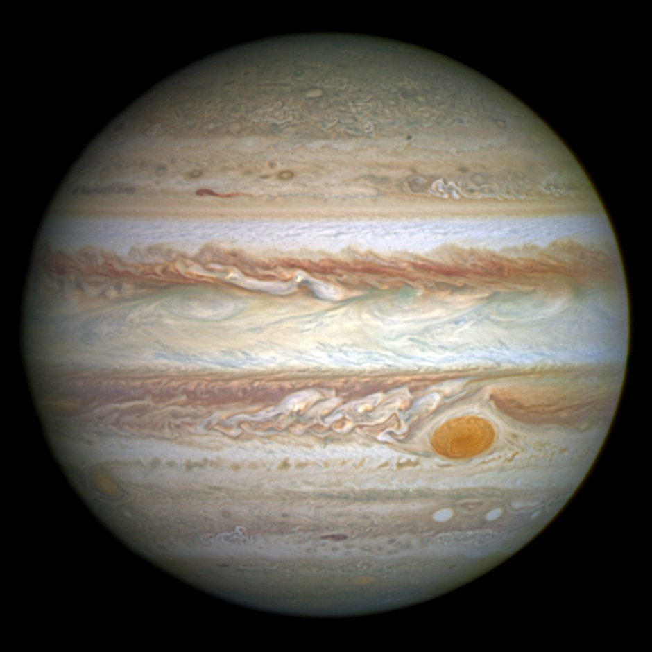

Jupiter is the fifth planet from the Sun and the largest in the Solar System. It is a gas giant with a mass one-thousandth that of the Sun, but two-and-a-half times that of all the other planets in the Solar System combined. Jupiter is one of the brightest objects visible to the naked eye in the night sky and has been observed since pre-historic times. When viewed from Earth, Jupiter is on average the third-brightest natural object in the night sky after the Moon and Venus. It is named after the Roman god Jupiter.
